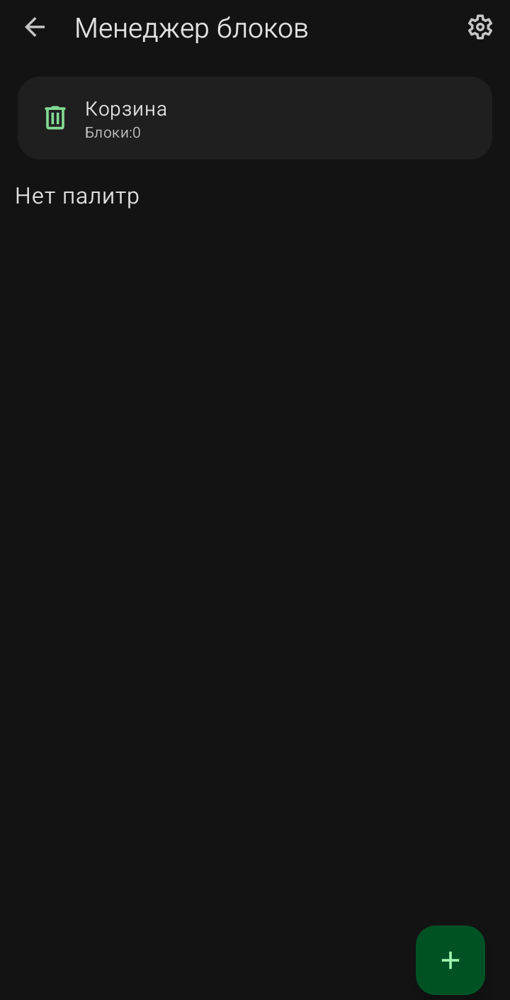
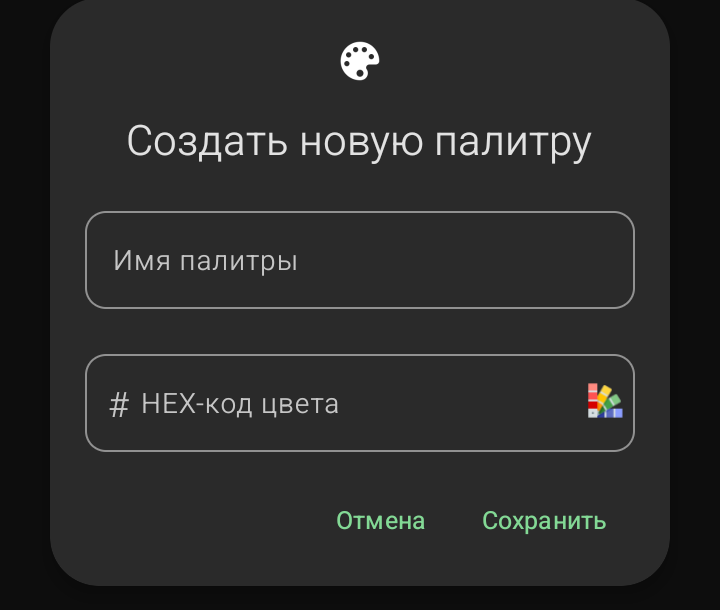
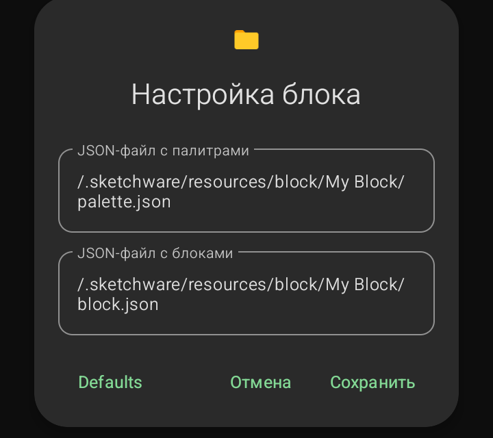

Менеджер блоков (Управление палитрами)

Это инструмент для продвинутых пользователей, позволяющий создавать свои собственные блоки программирования. В стандартном режиме здесь пусто.
- Корзина (Блоки: 0): сюда попадают удаленные блоки. Вы можете восстановить их оттуда.
- «Нет палитр»: если вы еще не создавали своих палитр, вы увидите эту надпись.
- Кнопка «+» (внизу справа): создает новую палитру (группу) для ваших блоков.
Окно «Создать новую палитру»

- Имя палитры: название вашей группы блоков.
- HEX-код цвета: цвет, которым будут окрашены блоки в этой палитре.
Окно «Настройка блока»

- JSON-файл с палитрами: путь к файлу, описывающему структуру палитры.
- JSON-файл с блоками: путь к файлу, содержащему код и внешний вид самого блока.
Sketchware Pro 7 · Автор: RasNikGal · © 2026